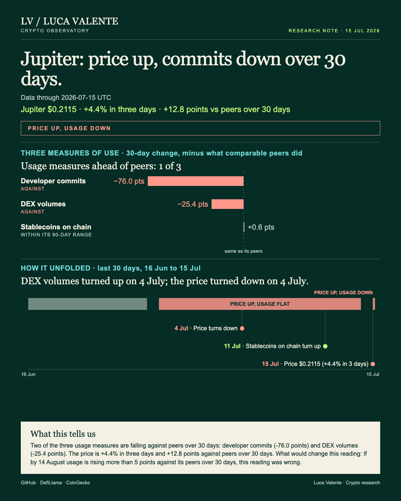
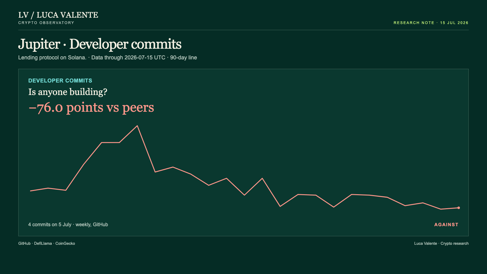
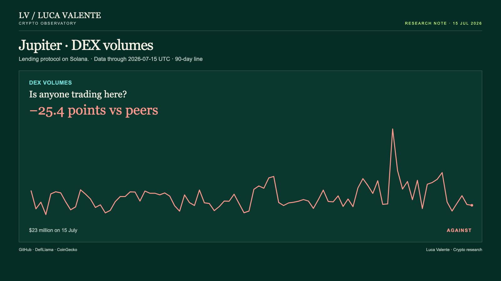

Training note, written on 23 September 2026 from data as of 15 July 2026. Not part of the published series.
Is Jupiter's Price Moving Without Its Usage?

I don't know yet whether Jupiter's price gain means more than the numbers behind it. Here's why I'm watching it.
Jupiter is a decentralized exchange on Solana, where people swap tokens. If you follow platforms like it, a price that climbs while usage slips deserves a second look.
JUP, its own token, trades and is tracked like any other listed coin. This note is dated 15 July 2026; the 30-day comparisons here start on 16 June.
For these comparisons, Jupiter sits in a Lending group of 35 entities. Each measure is checked only against members who actually cover that figure, which is why the count behind every median moves around.
On 15 July, JUP closed at $0.2115. That's up 2.2% from the day before, and up 4.4% over three days.
Its 30-day change is +17.8%: on 15 June the price sat at $0.1795. That's a bigger gain than its peer group: 10 Lending tokens whose price is quoted show a median rise of 5.1% over the same stretch. The gap works out to 12.8 points ahead of that typical move.
Developer commits went the other way. GitHub logged 4 for the week starting 5 July, the most recent full week counted. That's a drop of 65.2% over 30 days.
The 27 Lending members that report commits had a median gain of 10.8% over the same month. That gap comes to 76.0 points behind.

Trading volume tells a similar story. On 15 July it stood at $23 million, down 49.9% over 30 days.
Here the usual group comparison isn't available: fewer than five Lending tokens report trading volume, too few to build a group median. Measured instead against the wider market, 32 entities that do report it, the median there fell 24.5%. That puts Jupiter 25.4 points further behind.

But not every measure argues the same way. Stablecoins on Solana, the chain Jupiter runs on, stood at $14.96 billion on 15 July. They're down only 3.4% over 30 days.
Twenty-eight Lending members that report this figure show a median fall of 4.0%. That puts this one measure 0.6 points ahead of typical.
That measure, though, I read with care. It tracks money sitting across the whole chain, not activity specific to Jupiter's own exchange.
Timing matters too. Eleven weeks before this data, commits turned down; they've fallen in seven of the eleven weeks that followed. The price turned down eleven days before this data, on 4 July. It has fallen on eight of the twelve days since, even though the 30-day change stayed positive. Trading volume flipped the other way that same day, rising on seven of the next twelve days. Stablecoins on the chain turned up on 11 July, climbing on three of the last five days.
Something in that timing doesn't sit cleanly for me. The price is higher on net, yet it has spent more days falling than rising since it turned. I don't have a tidy way to square those two facts in one line.
Three things aren't in front of me for Jupiter: value locked, fees, and Layer-2 transaction counts. Nothing tracking users or wallets is in front of me either. The only usage signals here are commit activity, the stablecoin figure for the chain, and trading volume. Nothing after 15 July is in front of me.
Today's move is too small to define a set of comparable episodes.
Hold me to 14 August. If by 14 August usage is rising more than 5 points against its peers over 30 days, this reading was wrong.
My reading: the price is up over the month while the exchange's own lines are down, and that is not proof the exchange is failing.
Sources: DefiLlama, CoinGecko, GitHub.
Not financial advice. This is a research note based on public on-chain data.